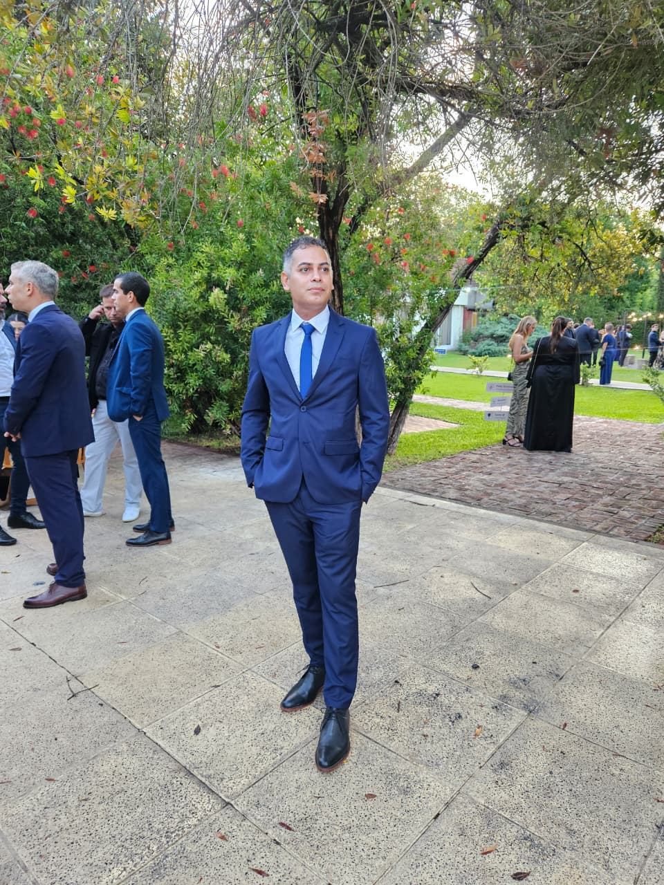
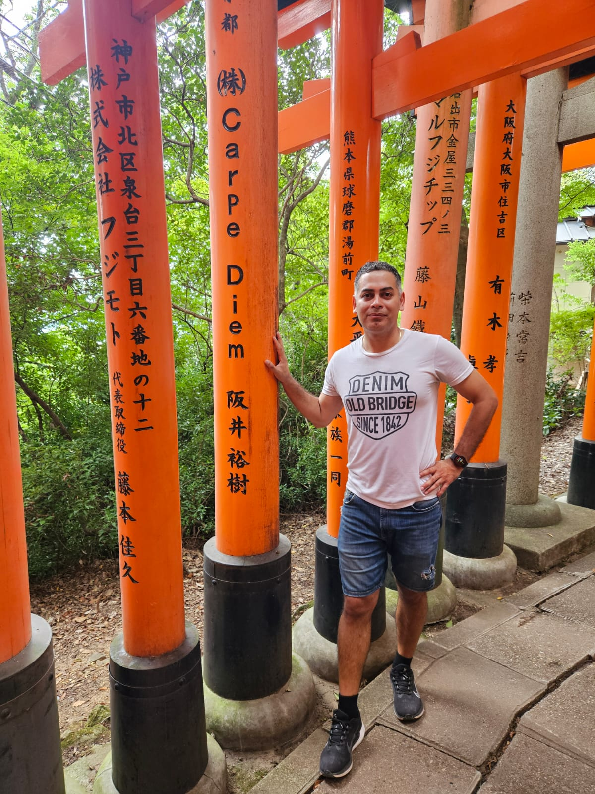
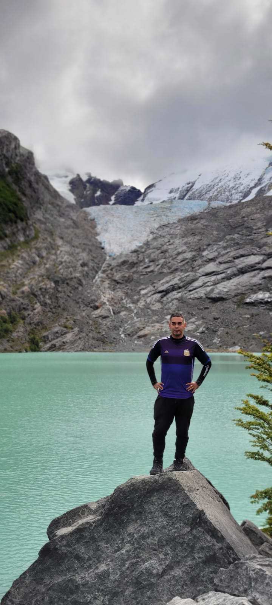
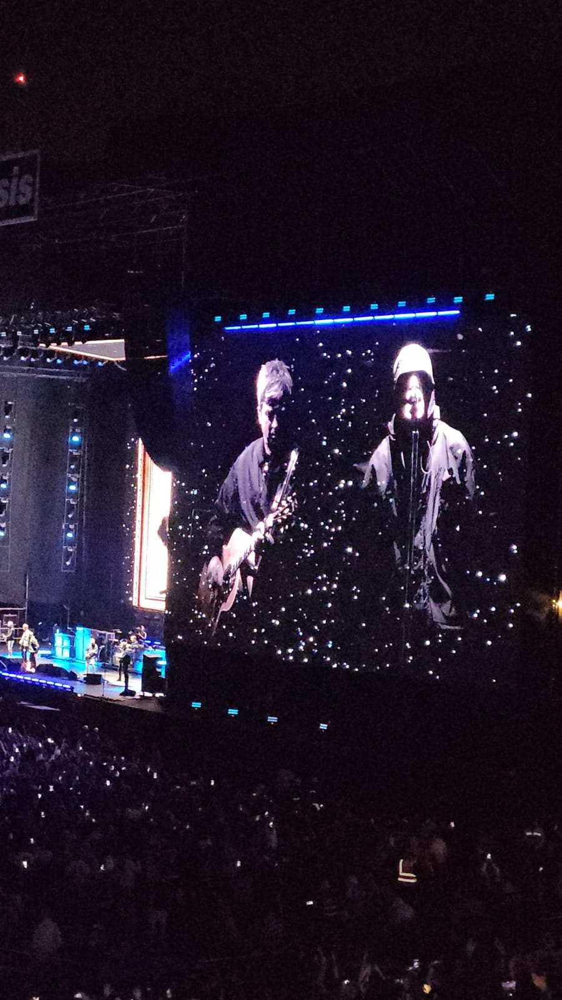
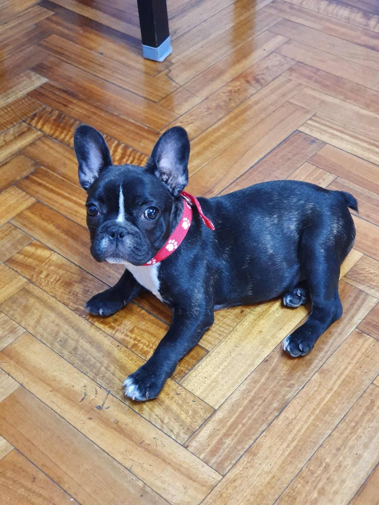

Sobre mí
Presentacion
Soy Matías Miranda, tengo 37 años y este año comencé la carrera de Licenciatura en Gestión de Tecnología de la Información en UADE. Trabajo como líder técnico para el banco BBVA. Soy hincha y socio de River, me gusta jugar a la pelota, viajar y disfrutar recitales.

Mis hobbies
Lo que me gusta hacer
Me gusta viajar, ir a recitales y jugar al fútbol. Disfruto conocer lugares nuevos, compartir con amigos y vivir experiencias distintas. tambien me gusta leer manga y ver anime. Mi color preferido es el naraja, mi comida favorita es el pastel de papa y uno de mis postre favorito es el cheescake. De todo los viajes que hice hasta ahora, el que mas me gustó fue a Japon, donde conoci una cultura completamente diferente a la cultura occidente, quede faciando con sus ciudades, medios de trasporte edificios e inodoros. jeje
Ver escudos de River a lo largo de la historia


Mi mascota
Una compañera muy especial
Tengo una bulldog francés que se llama Kiara. Es una parte muy importante de mi vida, porque me acompaña todos los días y forma parte de mi familia. Me gusta pasar tiempo con ella y cuidarla.
